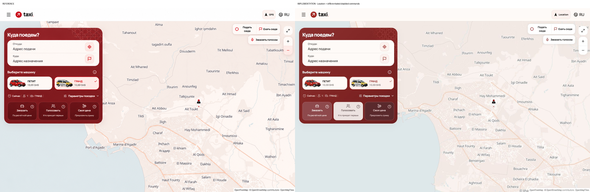
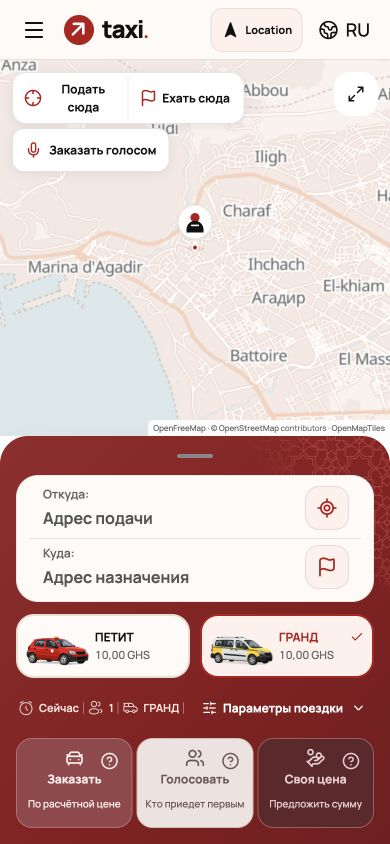
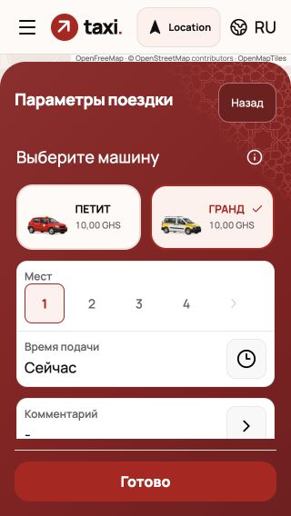
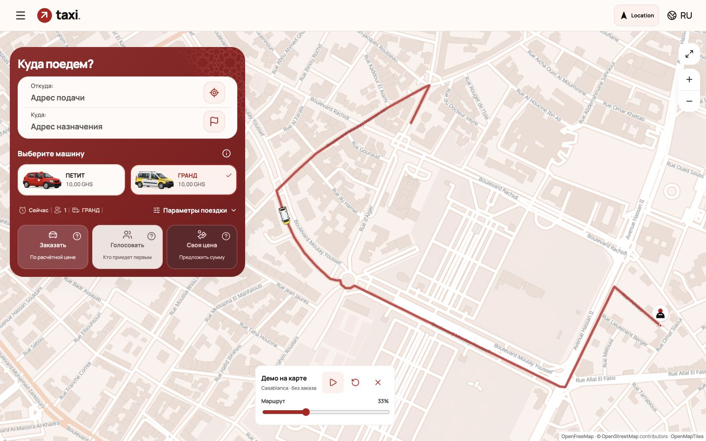
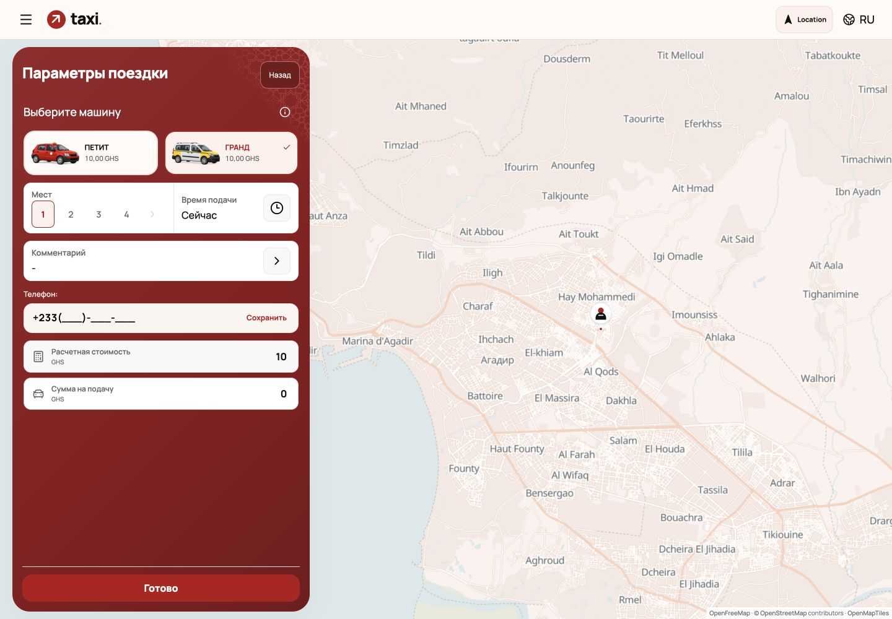
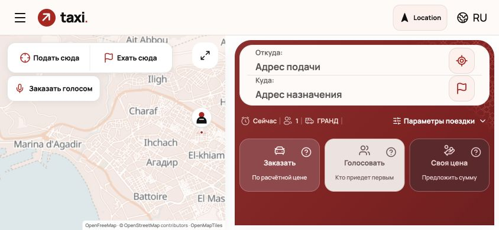
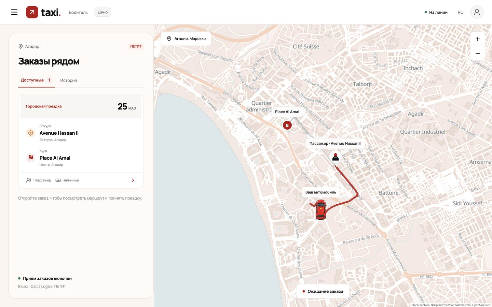

Новый красный референс, тёплая карта, Location. Цены не пересекаются с машинами; команды различаются; в демо GRAND едет бело-жёлтая машина соответствующего класса.
710 тестов, TypeScript, production build и проверка границ backend прошли. Реальная серверная поездка и физические телефоны здесь не проверялись.
Клиент · Водитель · Демо водителя






